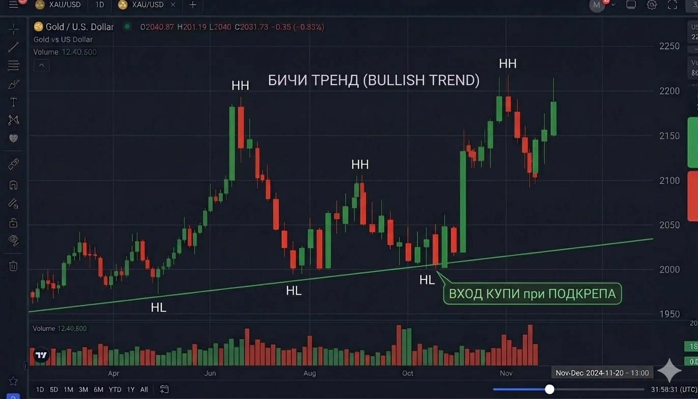

Възходящ тренд
Цената прави по-високи върхове (HH) и по-високи дъна (HL). Купувачите имат превес.

Трендът показва общата посока на пазара. Като се научиш да разпознаваш върховете и дъната, ще можеш да различаваш възходящо движение, низходящо движение и страничен пазар.
Не всеки пазар се движи постоянно нагоре или надолу.
Цената прави по-високи върхове (HH) и по-високи дъна (HL). Купувачите имат превес.

Цената прави по-ниски върхове (LH) и по-ниски дъна (LL). Продавачите имат превес.

Цената се движи в диапазон. Няма последователни по-високи или по-ниски върхове и дъна.

Сравнявай новия потвърден връх с предишния връх, а новото дъно – с предишното дъно.
Връх 2 100 → нов връх 2 130. Дъно 2 050 → ново дъно 2 075.
Връх 2 100 → нов връх 2 075. Дъно 2 050 → ново дъно 2 020.
В низходящ H4 тренд цената може временно да прави по-високи върхове и дъна на H1, защото се движи нагоре в рамките на корекция. За да говорим за промяна на по-голямата структура, трябва да се нарушат важни H4 върхове/дъна и да се появи нова последователност.
Започни от по-голямата картина, после приближи.
Да наречеш всяко малко покачване „нов възходящ тренд“ или всяко кратко падане „нов низходящ тренд“. Работи с ясно видими swing върхове и дъна и винаги уточнявай на кой таймфрейм ги наблюдаваш.
Предишният връх е 2 350, а новият е 2 330. Как се нарича новият връх?
Отговор: Lower High (LH), защото е по-нисък от предишния.